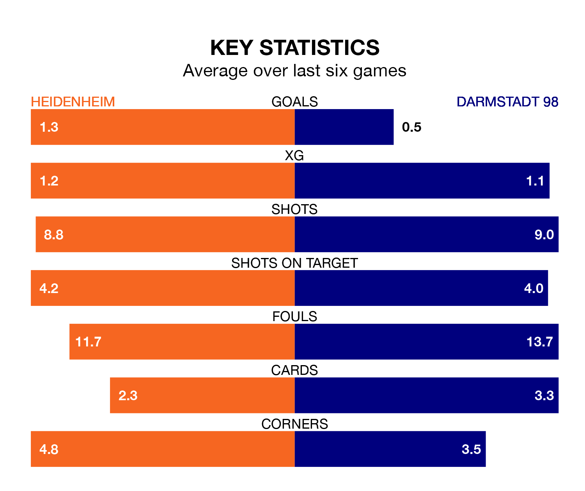

Heidenheim and Darmstadt 98 both come into Saturday's early kick-off at Voith-Arena in poor form, having picked up four and two points respectively in their last six games.
Heidenheim have won one and drawn one of the last six, while Darmstadt 98 have taken two draws and four losses.
Darmstadt 98 are 16th in the table after 13 games, of which they have won two and drawn three, earning nine points.
Heidenheim are two places ahead of the visitors in 14th, with three wins and two draws putting them on 11 points.
With 15 goals in 13 games so far this season, Darmstadt 98 are scoring at below the league average rate with 1.2 goals per game. And they are conceding more than average, letting in 34 goals at a rate of 2.6 per game.
The home side are also below average scorers, with 1.4 goals per game, compared to a league average of 1.7. They have conceded 2.2 goals per game.
In the last five years, Heidenheim and Darmstadt 98 have played each other on nine occasions. Heidenheim won five of them, Darmstadt 98 three, and they drew once.
On average, Heidenheim scored 1.6 goals and Darmstadt 98 1.6 in those matches.
Their last meeting was on March 4, when Heidenheim won 1-0 at home.
Heidenheim's last match was on December 2, a 2-1 loss against RB Leipzig, with Benedikt Gimber getting the goal for Heidenheim.
Darmstadt 98 lost 1-0 against Köln last time out, on December 1.
